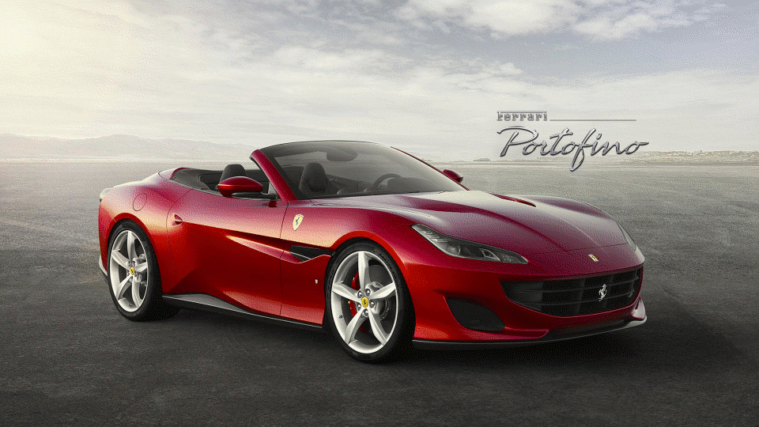

Le moteur de la Ferrari Portofino M fait partie de la famille des moteurs turbo V8 élus « International Engine of the Year » (Moteur International de l’Année) quatre années consécutives. Il développe 620 ch, soit vingt de plus que la Ferrari Portofino, grâce aux profils des arbres à cames et à l’intégration d’un capteur de vitesse sur le turbocompresseur pour mesurer la vitesse de rotation de la turbine. L’intégration du nouveau filtre à particules dans le système d’échappement permet de respecter la norme Euro 6D sans jamais compromettre le plaisir de conduite.
V8
MOTEUR
3.45 sec
0-100 KM/Hw
3855 cc
CYLINDRÉE TOTALE
620 ch

data:image/jpeg;base64
Voici un trailer explicatif de la Ferrari Portofino